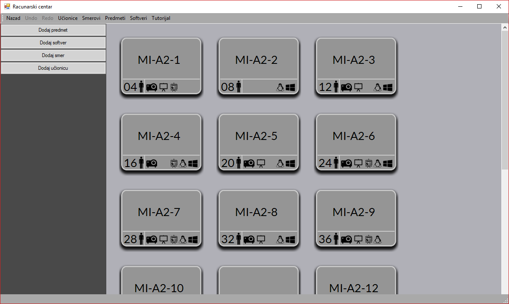
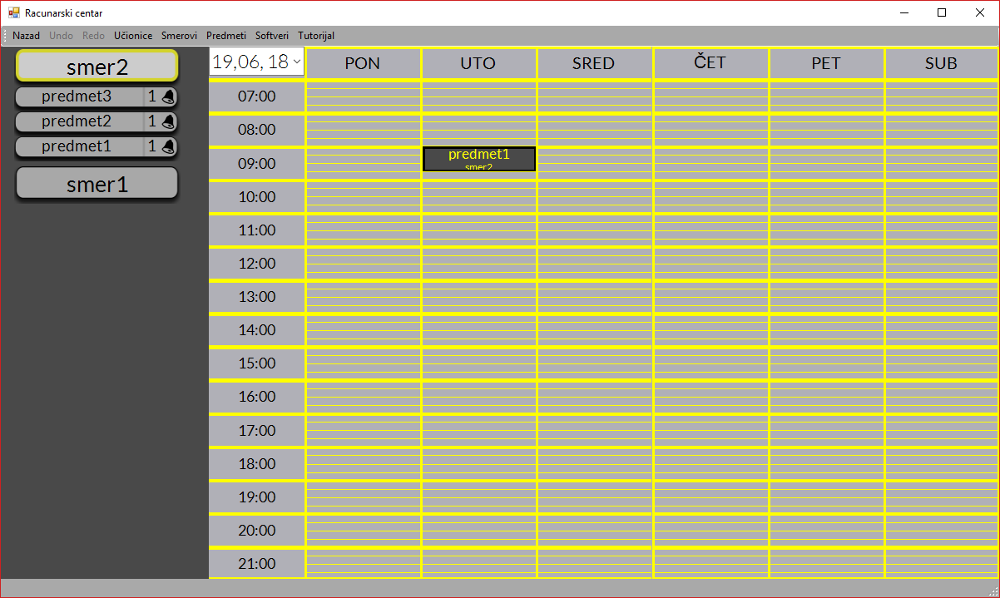
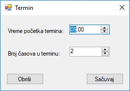

1. Glavna forma
1.1 Forma računarskog centra
- Broj pored nacrtanog čovečuljka označava koliko mesta ima u učionici.
- Postojanje projektora u učionici.
- Postojanje obične table u učionici.
- Postojanje pametne table u učionici.
- Instaliran linux operativni sistem u učionici.
- Instaliran windows operativni sistem u učionici.
1.2 Forma učionice
Ispod naziva učionice postoji par sličica:
- 
- 
2. Predmet
2.1 Dodavanje predmeta
- Id predmeta mora biti jedinstven, odnosno ne mogu se naći dva predmeta koja imaju identičnu identifikaciju.
- Smer se može odabrati samo prilikom unosa novog predmeta, dok se prilikom izmene ne može menjati.
- Predmet zahteva pojedinu opremu u učionici kako bi se mogao održavati, pa metodom čekiranja se može odabrati ista.
2.2 Izmena predmeta
2.3 Brisanje predmeta
- Brisanje se obavlja tako što odaberete željeni predmet sa desne strane u tabelarnom prikazu (na slici broj 1) i pritisne dugme 'Obriši' (broj 2).


3. Softver
3.1 Dodavanje softvera
- Id softvera mora biti jedinstven, odnosno ne mogu se naći dva softvera koja imaju identičnu identifikaciju.
- Neophodno je da jedan od dva ponuđena operativna sistema bude selektovan, a mogu i oba.
- Ostala polja nisu obavezna, ali је poželjno popuniti što više informacija o softveru.
3.2 Izmena softvera
- Sa desne strane se može videti tabelarni prikaz svih softvera.
- Nakon selektovanja željenog softvera (na slici broj 1), pritiskom na dugme 'Izmeni' (broj 2) se
otvara forma za dodavanje/izmenu predmeta gde se unose novi podaci,
odnosno izmene koje želite. 3.3 Brisanje softvera
- U prikazanoj formi na slici ispod, crvenim brojem 1 je selektovan jedan softver u tabelarnom prikazu filtriranih
softvera po željenom kriterijumu. Nakon odabira željenog softvera, potrebno je pritisnuti dugme 'Obriši' (broj 2) kako bi softver obrisali.


4. Smer
4.1 Dodavanje smera
- Prilikom dodavanja smera potrebno je odabrati jedinstven id smera i uneti naziv smera.
- Potrebno je popuniti datum uvođenja smera tako što će se odabrati dan, mesec, datum i godina.
- Pritiskom na dugme 'Dodaj smer', otvara se forma za dodavanje novog predmeta.
- Potrebno je uneti sve predmete koje će taj smer sadržati.
- Kada ste napravili smer, potrebno je pritisnuti dugme 'Sačuvaj'.
4.2 Izmena smera
- Sa desne strane se može videti tabelarni prikaz svih smerova.
- Nakon selektovanja željenog smera (na slici broj 1), pritiskom na dugme 'Izmeni' (broj 2) se
otvara forma za dodavanje/izmenu smera gde se unose novi podaci,
odnosno izmene koje želite. - Prilikom izmene možete dodati nove ili izbrisati postojeće predmete sa smera.
4.3 Brisanje smera
- U prikazanoj formi na slici ispod, crvenim brojem 1 je selektovan jedan softver u tabelarnom prikazu filtriranih
softvera po željenom kriterijumu. - Nakon odabira željenog softvera, potrebno je pritisnuti dugme 'Obriši' (broj 2) kako bi softver obrisali.


5. Ucionica
5.1 Dodavanje ucionice
- Prilikom dodavanja učionice potrebno je odabrati jedinstven id učionice i uneti naziv iste.
- Potrebno je popuniti broj mesta koji učionica ima.
- Potrebno je čekirati opremu koju učionica poseduje.
- Nakon čekiranja operativnog sistema, sa desne će vam se omogućiti čekiranje softvera koje je potrebno da taj sistem ima.
- Kada ste popunili sva polja, potrebno je pritisnuti dugme 'Sačuvaj'.
5.2 Izmena ucionice
- Sa desne strane se može videti tabelarni prikaz svih učionica.
- Nakon selektovanja željene učionice (na slici broj 1), pritiskom na dugme 'Izmeni' (broj 2) se
otvara forma za dodavanje/izmenu učionice gde se unose novi podaci,
odnosno izmene koje želite. - Prilikom izmene možete ažurirati opremu koju učionica poseduje, kao i neophodan softver u zavisnosti
od sistema. - Prilikom izmene nije moguće menjati id učionice.
5.3 Brisanje ucionice
- U prikazanoj formi na slici ispod, crvenim brojem 1 je selektovana jedna učionica u tabelarnom prikazu filtriranih
učionica po željenom kriterijumu. - Nakon odabira željenog softvera, potrebno je pritisnuti dugme 'Obriši' (broj 2) kako bi softver obrisali.


6. Termin
- Nakon unesenog vremena početka termina i broja časova, pritisnite dugme 'Sačuvaj'.
- 